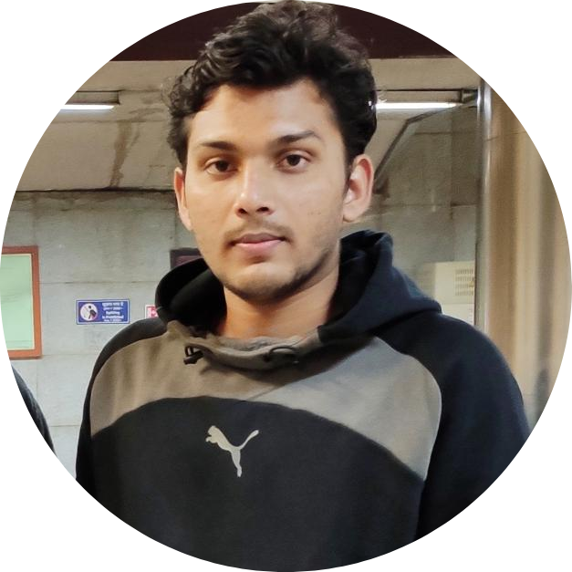

Research Highlights
Our latest joint paper, "Algorithmic Fairness in Lesion Classification by Mitigating Class Imbalance and Skin Tone Bias" gets accepted in MICCAI 2024 (the 27th International Conference on Medical Image Computing and Computer Assisted Intervention).
Faizanuddin Ansari, Tapabrata Chakraborti & Swagatam Das
Faizanuddin Ansari, Tapabrata Chakraborti & Swagatam Das
Our joint paper, "Interval Bound Interpolation for Few-shot Learning with Few Tasks" has been accepted for presentation at the 40th International Conference on Machine Learning (ICML 2023).
Shounak Datta, Sankha Subhra Mullick, Anish Chakrabarty & Swagatam Das
Shounak Datta, Sankha Subhra Mullick, Anish Chakrabarty & Swagatam Das

Some recent exciting news from our research group!!
Our paper "On Translation and Reconstruction Guarantees of the Cycle-Consistent Generative Adversarial Networks" has just been accepted accepted to the NeurIPS 2022.
Anish Chakrabarty & Swagatam Das
Our paper "On Translation and Reconstruction Guarantees of the Cycle-Consistent Generative Adversarial Networks" has just been accepted accepted to the NeurIPS 2022.
Anish Chakrabarty & Swagatam Das
Our Research
Our contributions as part of the Machine Learning Research Group (MLRG) can be broadly categorized into theoretical analysis and applications of Machine Learning. Our research articles regularly find their rightful places in top-tier venues such as AAAI, IEEE TPAMI, IEEE TNNLS, ICCV, NeurIPS, MICCAI, CVPR, AISTATS, etc. The impact of our publications is further evident by the 2000+ times they are cited over recent years.Primary Research Interests
Building Theoretical Backbone of Machine Learning Algorithms:
Following the fabled quote “There is nothing more practical than a good theory” by Lewin, we at MLRG are dedicated to investing our statistical knowledge in building the theoretical foundations of classical and emerging machine learning algorithms.-
Theoretical Analysis of Clustering Algorithms:
“Clustering” algorithms attempt to find natural groups present among individuals. Even though numerous algorithms have been conceived since the days of Lloyd (1957), a significant void still marks the absence of corresponding theoretical analysis. MLRG is one of the first to employ the recent advances in learning theory to derive exact finite sample concentration results in full generality. Moreover, MLRG is invested in making clustering algorithms more efficient, fast, and interpretable. First recognized by Tukey in the early ’60s, “outliers” have consistently inspired the genesis of ‘robust’ models. -
Deep Generative Algorithms:
In only 8 years, Deep Generative models found wide applicability and popularity in industry and academia for their commendable performance in applications like mage enhancing and processing, data augmentation, image-to-text or text-to-image translation, image-to-image visual style transfer, etc. Our Statisticians at MLRG accept their responsibility to provide theoretical foundations for deep generative models such as Generative Adversarial Networks and Wasserstein Autoencoder (WA).
Machine Learning Algorithms in Applications of Importance:
We at MLRG believe in applying our expertise in Machine Learning to regularly develop applications that positively impact the livelihood of society and provide artificially intelligent solutions to nationally important problems.-
Addressing the Curse of Class Imbalance:
In supervised learning tasks, representatives from rare and important classes are often outnumbered. This phenomenon formally termed ‘Class Imbalance”, leads a supervised learner to be biased towards the classes with a higher number of observations. Unfortunately, class imbalance directly impacts countless lives by regularly plaguing diverse applications, such as rare disease identification, fraud detection in financial transactions, mitigating social bias in fair learners, etc. MLRG has designed techniques tailored to alleviate the effect of class imbalance in learners like k-Nearest Neighbors, Support Vector Machines, and boosted classifiers. Moreover, our work also stresses the importance of ensuring unbiased evaluation of learners in the presence of class imbalance. As put into words best by Kierkegaard, “Truth always rests with the minority…”. In search of that truth, we have proposed a generative learning-based adaptive oversampling technique that empowers minority classes, improving a deep image classifier's performance. -
Machine Learning for Healthcare:
Answering the call of time, MLRG has designed an automated workflow using deep image classifiers that can detect COVID-19 cases from Chest X-Ray images. We are further progressing in this path to employ deep learning algorithms to mimic the visual signature of rare respiratory diseases for ease of detection. -
Machine Learning for Social Good:
MLRG is actively investigating the scope of applying deep generative models for digitally restoring the heritage of national importance.
Our Publications
Please visit the Google Scholar page of our faculty member Swagatam Das for a detailed list of our publications. Here we are only presenting our latest works done over the past year.
You can also find implementations in MatLab or Python for many of these works in the GitHub profiles of mlrgisi, Sankha Subhra Mullick, and Shounak Datta.
- Faizanuddin Ansari, Tapabrata Chakraborti, and Swagatam Das. "Algorithmic Fairness in Lesion Classification by Mitigating Class Imbalance and Skin Tone Bias." International Conference on Medical Image Computing and Computer-Assisted Intervention (MICCAI - 2024). Cham: Springer Nature Switzerland, 2024.
- Abhishek Kumar, Anish Chakrabarty, Sankha Subhra Mullick and Swagatam Das. "Enhancing Contrastive Clustering with Negative Pair-guided Regularization". Transactions on Machine Learning Research 2024.
- Shounak Datta, Sankha Subhra Mullick, Anish Chakrabarty and Swagatam Das. "Interval bound interpolation for few-shot learning with few tasks." International Conference on Machine Learning (ICML) 2023; (pp. 7141-7166) PMLR.
- Anish Chakrabarty and Swagatam Das. On translation and reconstruction guarantees of the cycle-consistent generative adversarial networks. In Proceedings of the 36th International Conference on Neural Information Processing Systems (NIPS '22).
- Abhishek Kumar, Ajani S. Oladayo, Swagatam Das, Rammohan Mallipeddi, GridShift: A Faster Mode-seeking Algorithm for Image Segmentation and Object Tracking, IEEE/CVF Computer Vision and Pattern Recognition Conference (CVPR) 2022, Accepted for Oral Presentation, June 19 - 24, 2022, New Orleans, USA.
- Anish Chakrabarty and Swagatam Das, Statistical Regeneration Guarantees of the Wasserstein Autoencoder with Latent Space Consistency, NeurIPS 2021 (Thirty-fifth Conference on Neural Information Processing Systems), Spotlight Acceptance.
- Debolina Paul, Saptarshi Chakraborty, Swagatam Das, Jason Xu, Uniform Concentration Bounds toward a Unified Framework for Robust Clustering, NeurIPS 2021 (Thirty-fifth Conference on Neural Information Processing Systems), Spotlight Acceptance.
- Saptarshi Chakraborty, Debolina Paul and Swagatam Das, Automated clustering of highdimensional data with a feature weighted mean shift algorithm, AAAI 2021 (35th AAAI Conference on Artificial Intelligence), pp. 6930-6938, February 2 - 9, 2021.
- Saptarshi Chakraborty, Debolina Paul and Swagatam Das, t-Entropy: a new measure of uncertainty with some applications, IEEE International Symposium on Information Theory (ISIT 2021), 12-20 July 2021, Melbourne, Victoria, Australia.
- Saptarshi Chakraborty, Debolina Paul, Swagatam Das, and Jason Xu, "Entropy regularized power k-means clustering", AISTATS 2020 (The 23rd International Conference on Artificial Intelligence and Statistics), Accepted 2020.
- Sankha Subhra Mullick, Shounak Datta, Swagatam Das. Generative Adversarial Minority Oversampling,International Conference on Computer Vision (ICCV 2019), 2019. (arxiv link: 1903.09730).
- Debolina Paul, Saptarshi Chakraborty, Swagatam Das, and Ivan Zelinka. On the non-convergence of differential evolution: some generalized adversarialconditions and a remedy. In Proceedings of the Genetic and Evolutionary Computation Conference Companion (GECCO '19), 2019, DOI:10.1145/3319619.3322007.
- Sankha Subhra Mullick, Shounak Datta, Sourish Gunesh Dhekane and Swagatam Das, "Appropriateness of performance indices for imbalanced data classification: an analysis", Pattern Recognition, Elsevier, DOI: 10.1016/j.patcog.2020.107197, Accepted, 2020.
- Arka Ghosh, Swagatam Das, Asit Kr. Das, and Liang Gao, "Reusing the past difference vectors in differential evolution - a simple but significant improvement", IEEE Transactions on Cybernetics, DOI: 10.1109/TCYB.2019.2921602, Accepted 2019.
- Avisek Gupta, Shounak Datta and Swagatam Das, "Fuzzy clustering to identify clusters at different levels of fuzziness: an evolutionary multiobjective optimization approach", IEEE Transactions on Cybernetics, DOI: 10.1109/TCYB.2019.2907002, Accepted 2019.
- Saptarshi Chakraborty and Swagatam Das, "On the strong consistency of feature weighted k-means clustering in a nearmetric space", STAT, Wiley, DOI: 10.1002/sta4.227, Accepted 2019.
- Shounak Datta, Sayak Nag and Swagatam Das, "Boosting with Lexicographic Programming: Addressing Class Imbalance without Cost Tuning", IEEE Transactions on Knowledge and Data Engineering, DOI: 10.1109/TKDE.2019.2894148, Accepted, 2019.
Our Members
Faculty Member
Swagatam Das
Professor, Electronics and Communication Sciences UnitProfessor-in-Charge, Computer and Communication Sciences (2024-2026)
Indian Statistical Institute
Senior Research Fellows
Susmita Ghosh
Senior Research FellowElectronics and Communication Sciences Unit
Indian Statistical Institute
Anish Chakrabarty
Senior Research FellowStatistics and Mathematics Unit
Indian Statistical Institute

Kushal Bose
Senior Research FellowElectronics and Communication Sciences Unit
Indian Statistical Institute

Faizanuddin Ansari
Senior Research FellowElectronics and Communication Sciences Unit
Indian Statistical Institute
Priyobrata Mondal
Senior Research FellowElectronics and Communication Sciences Unit
Indian Statistical Institute
Arghya Pratihar
Senior Research FellowElectronics and Communication Sciences Unit
Indian Statistical Institute
Arghya Pratihar
Senior Research FellowElectronics and Communication Sciences Unit
Indian Statistical Institute
Graduate Students
Alumni & Adjunct members
Shounak DattaSenior Research Engineer, ARM Inc., Austin TX, USA
Sankha Subhra Mullick
Senior AI Reseracher, Dolby Laboratories, India
Avisek Gupta
PostDoctoral Fellow, TCG-Crest, India
Abhishek Kumar
Visiting Professor VSB - Technical University of Ostrava
Arkajyoti Saha
Postdoctoral researcher, Statistics, University of Washington
Saptarshi Chakraborty
PhD Candidate, Department of Statistics, University of California, Berkeley
Debolina Paul
PhD Candidate, Department of Statistics, Standford University
Imon Banerjee
PhD Candidate, Purdue Department of Statistics.
Sayantan Kumar
PhD Candidate, Deaprtment of Computer Science & Engineering, Washington University in St. Louis.
Arka Ghosh
Assistant Professor, Bennett University, India
© reserved to MLRG, ECSU, ISI (2020 – 2025).
Developed by, Sankha Subhra Mullick, over Hydeout project, on 29th of January, 2020.
Updated on January 15, 2025; 07:02 (+0530 UTC)